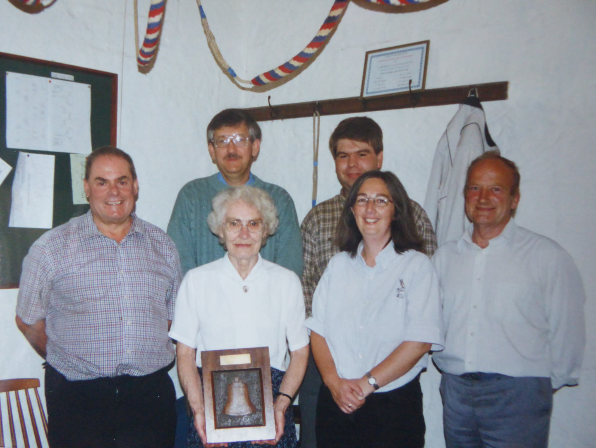
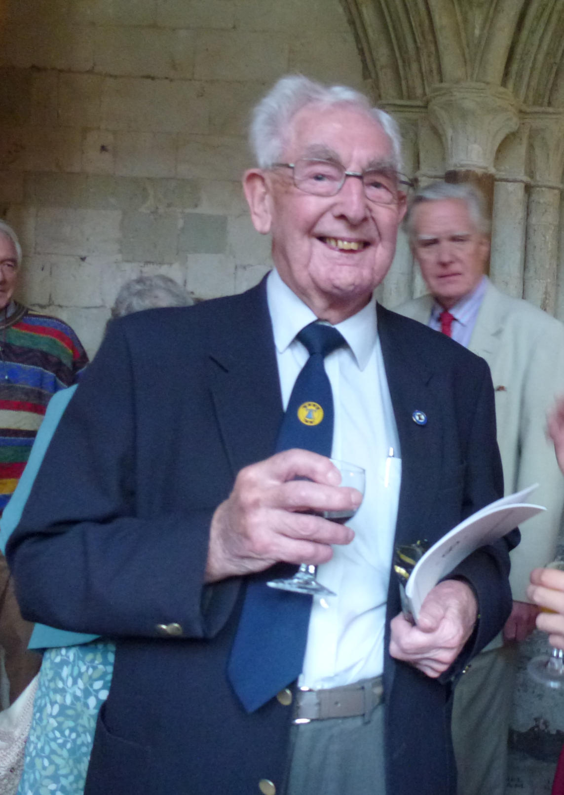
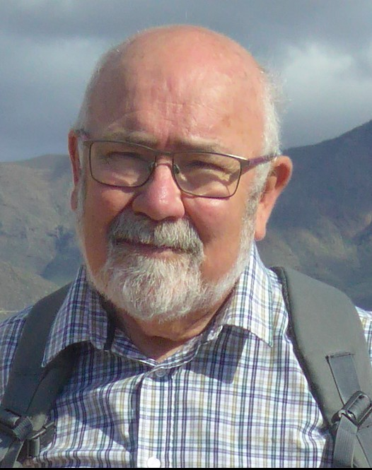

Past Members

John Collett
1932 - 2025
John Collett passed away in July 2025 at the age of 93. He was a past president of the Eastern branch and played a leading role in ringing in the branch and the Boston area. He was involved with the Kirton in Holland band for many years and latterly ran the Butterwick practices alongside Tom Freeston.
He was one of ringing's 'characters' and lots of you who rang with him will have many stories to tell!!
John moved to Burford in Oxfordshire a few years ago to be nearer his family. From Burford he always took an interest in what we were up to in Butterwick and Boston! For as long as he could make the journey he returned each October for the Eastern branch race night to present the Betty Collett cup to the winner- which he donated in memory of his wife.
He died peacefully just 6 days after being admitted to a hospice.
RIP John.
Brian Bunting
-

Brian Bunting died on Thursday 3rd August 2023.
He was a long standing Kirton member of the Eastern Branch.
Tom Freeston
1932 - 2023

Tom Freeston, former tower captain of Boston and Eastern branch president, passed away on Tuesday 5th June 2023. Tom had been Bell Ringing Captain at Boston Stump for 41 years, before standing down at the end of 2012. He was a stalwart of the Eastern Branch, supporting ringing all over the East of Lincolnshire.
In 2013 Tom was given a Civic Award for "Service to the Community" by Boston Borough Council. This was awarded for his long and loyal service as Bell Ringing Captain at St Botolph's, better known as Boston Stump and for services to bell ringing across the district. Tom's acceptance speech when receiving the Mayor's Award says it all.
"Mr Mayor and Mayoress, deputy Mayor and deputy Mayoress, Councillors, ladies and gentlemen. Thanks to Councillor Helen Staples for her kind words, and I am very pleased and honoured to receive this Award for Service to the Community. When I received the letter in January informing me that the Council had agreed to select me as a recipient for this Award, my thoughts went way back to 1946 when I was 14. This was when my late brother, who was also a bell ringer at Boston Stump, introduced and taught me the art of bell ringing (or campanology to give it's posh name).
My interest in bell ringing has given me the opportunity to ring bells at many other churches and cathedrals, and also to make numerous new friends from far and wide. No doubt some of you will have seen the advert for Mars Bars on the television where the bell ringers are swinging around on the bell ropes after consuming the chocolate bars. I can assure you that this is not the correct way to ring the church bells! However, I do feel that the exercise is very good considering that the heaviest bell in the Stump weighs just over one ton. I am sure many of you have seen footage of yesterday's funeral (Margaret Thatcher's) in London, when the sound of church bells played a prominent part in the proceedings. However, whilst the bells were mentioned nothing was said about the bell ringers as we are mostly unseen in the ringing room, high up in the tower.
May I therefore suggest the next time you hear church bells being rung, to please give a thought for the men, women, girls and boys who have climbed numerous steps and are pulling the bell ropes.
It is, indeed a great honour and privilege to ring the bells at our world famous Boston Stump, which in addition to ringing prior to Sunday and other services, has been to greet royalty when visiting the church, and also last year on the 27th June when the Olympic torch passed through the Market Place. I hope to be able to continue for many more years provided I can climb the 200 steps to the ringing room. I have been very lucky to have received valuable help from many local bellringers, some who are present here tonight, and I would like to take this opportunity of thanking them for all the assistance they have given me in the past.
Lastly, I would like to thank my wife and family for all the encouragement they have given me".
Lots of ringers will have their own happy thoughts and memories of Tom. We've been told the funny thing was Tom never wanted to learn to ring, but as his brother was going his Mum made him go too; all Tom wanted to do was play football. Having been one of the few to ring for two coronations, be tower captain at The Stump for 41 years, be Eastern Branch President, accounts checker, supporter of the Branch in so many ways, he still managed to be a family man and enjoy sports of various sorts also dancing with his wife Janet. He was a friend to many and will be sorely missed, our thoughts and prayers are with his family and friends. RIP Tom.
Val Wild
Ian DGB Ansell
(1956-2022)
Ian DGB Ansell died in January 2022. He was tower captain for the Kirton in Holland group of towers for 30 years and a past ringing master of the Eastern branch. In January 2001 took over the running of Sibsey Trader Windmill and opening every Saturday meant he could no longer attend branch practices so in 2002 he started hosting an annual Eastern branch barbecue at Sibsey Windmill to support the branch and raise lots of funds for the branch bell repair fund.
Ian was about 14 or 15 when he decided to approach a local tower to learn to ring. This was a serious band who could ring half a course of Cambridge while ringing the bells down! He was told "we don't teach here- go to Hitchin- they'll teach you- come back when you know how" So he went to Hitchin -and he never went back. Or ever turned anyone away who asked to learn to ring. Once he could ring, he would often get on the train on his own and head into London to ring.
He rang his first peal of Plain Bob major at Meldreth aged 16 on 19th August 1972, about 2 years after starting to learn. He rang 98 peals in total.
In the following years he rang quite a bit in London and Hertfordshire until work took over and ringing stopped for a while.
After moving to Lincolnshire a work accident meant he was bored at home. So in 1990 he went to Kirton (in Holland) practice night. He persuaded his stepson Wayne to go along too. With 2 good ringers the Kirton band could advance, and they began Saturday evening quarter peals around the area. Other good ringers joined them, and they became a strong band. He became tower captain in 1992.
Around the millennium Ian threw himself into ringing to help him deal with treatment for cancer and he was part of the world record holding band for the greatest number of quarter peals in a day- 28 at Mablethorpe. That record still stands today. During one year around that time he rang around 500 quarters while undergoing radio and chemotherapy.
In total Ian rang 2196 quarters and conducted many of them, including lots of multidoubles, which he loved. His other quarter peal achievements were completing the surprise major and minor alphabets and the complete surprise minor little red book!
Ian enjoyed teaching and helping others progress and he was a driving force in getting other ringers to quarter peal level. His outings were meticulously planned and greatly enjoyed.
As a teacher he was very calm, patient, understanding and generous with his time. His natural quick-wittedness meant that everyone felt welcome, at ease in his company and learnt from him.
Sadly, lockdown meant that Ian was unable to mark his 50th year of ringing as he intended. He is greatly missed by all of us who knew and rang with him.
Joan Simpson
1932 - 2022
Joan Edna Simpson was born in Louth, Lincolnshire, in 1932. Her father, Arthur Hoodless was a renown ringer and rang at Barton-on-Humber and St James' Louth until the age of 91. Her grandfather, also named Arthur, was the Tower Captain at Barton-on-Humber for many years. Due to her father's reserved occupation the family relocated to Nottinghamshire during the Second World War.
When Joan rang her first church bell at the age of 13 in 1945, Winston Churchill was Prime Minister, George VI was on the throne and the Second World War was about to end. Joan rang at Cotgrove Church in Nottinghamshire until 1962. During this time she met Allan her husband, also a ringer. The family then moved to Southsea Portsmouth where they continued to ring in the Portsmouth and Hilsea area until Joan and Allan returned to Lincolnshire in 1995, moving to Coningsby, where Joan had been a very active member of local bell ringing teams until her death in November 2022.
Joan continued to ring until she was 87. This amazing commitment spanning 72 years and her charity work especially for the church and Cancer Research, was recognised when she was awarded the British Empire Medal (BEM) in the 2018 New Years Honors List. She always said that she hoped the award of the BEM would raise the profile of bell ringing and encourage more people to share her wonderful hobby. She rang her last quarter on 10 October 2018 at Potterhanworth, to celebrate the award of the BEM.
She passed away after a short illness in her care home. The final words should go to Joan; 'I have really enjoyed it and it is a great way of making friends' and of course her mantra 'listen to your bells!'
Tracey Goldsmith
Tracey Goldsmith passed away at home on Thursday 28th Jan 2021
We are sure you will all join with us in sending our sincerest condolences to Jan and Tracey's other family members and friends at this time.
Tracey's funeral was held on Tuesday 2nd March at Alford Crematorium. Ringers from Alford stood along the route and marked her passing with the ringing of handbells.
Aubrey Arthur Pepper
1931 - 2020
Aubrey sadly passed away on 14th September 2020, aged 89 years. His funeral was held at Weston-super-Mare Crematorium on October 2nd.
Aubrey was a long-time bell-ringer and Bell Captain at St. Guthlac's, Fishtoft from 1980 to 2015. He rang his first peal on July 23rd 1949, aged 18. He conducted a peal at Deeping St. Nicholas, also in 1949.
In total he rang 8 peals, the last being at Fishtoft on July 27th 2002 for the wedding of Judith Metcalf who learned to ring with Aubrey, and Peter McCoy. A peal board has been prepared, and will be put up in due course.
Between his seventh and his final peal there was a gap of nearly 50 years, apparently the second longest gap on record.
Aubrey came to Fishtoft in 1970 as a ringer and became Bell Captain in 1980. Over the years, he taught many ringers, many of whom are still ringing.
On 4th June 2007, the first meeting of the '75s Club' was held when a quarter peal of Bob Minor was rung at Wragby. The six ringers were aged 75, or nearing that age. The band was Jim Sutherland, Aubrey Pepper, Rhoda Reynolds, John Collett, Leslie Townsend, and Tom Freeston. After that they met regularly at Wragby, followed by a meal together.
Aubrey moved to Tavistock, Devon to live near one of his sons, and later to a care home in Weston-super-Mare to be near his other son. He will be sadly missed by all his family and friends.
David Bennett
Bill Brotherton
1945 - 2020

Bill was born in Wolverhampton on the 22nd of August, 1945. His father, Francis (Frank) Brotherton, was an excellent studious ringer and Tower Captain at St. Peter's Wolverhampton, a 33cwt Gillett & Johnston ring of 12. Bill was taught to ring there by his father at the age of about 17, in a two-hour session. He then joined the regular practice night and was ringing Grandsire Doubles on an inside bell (by numbers) when future wife Helen arrived to see the ringing with a view to learning. Bill was also a server at St. Peter's. He was a member of the church badminton club and the Friday Club; an art, music and literature discussion group - only intermittently though as he considered it a bit highbrow!
Bill attended a local college where he completed a sandwich course in Mechanical Engineering, gaining a 1st Class Honours degree. Bill and Helen married in 1967. The following year Bill was offered a PhD placement at Cambridge University which he accepted. However, due to political reasons, funding was not available and he could not take up the place. Contact with Cambridge continued however, and he did some work there.
In 1973 Bill joined Ferranti in Edinburgh, working in micro-electronics. The family then moved to Edinburgh where Bill started ringing at both the Cathedral and St. Cuthbert's. He gave up ringing whilst the children were very young, but after Clare and James had learnt to ring, the whole family took up ringing. Bill became Steeplekeeper and then Tower Captain at Edinburgh Cathedral from 1990 - 2014. Bill was instrumental in augmenting the ring of 10 to 12 whilst achieving his ambition in retaining the wooden bell frame. This made St. Mary's Cathedral the first ring of 12 bells in Scotland. He also served a three-year term as Master of the Scottish Association of Change Ringers.
Following the closure of Ferranti, Bill worked for Fife Council as a technician at a local school from 1996 until retirement in 2010.
Bill rang his first peal in October 1964 at Shifnall, Shropshire, inside to Grandsire Triples for the Shropshire Association. His first peal together with the whole family was at St. Cuthbert, Edinburgh in 1987 in 3 minor methods conducted by Bill. A peal of Cambridge Surprise Royal at Edinburgh Cathedral in September 1992 celebrated Bill and Helens' Silver Wedding Anniversary. Plain Bob Maximus at Edinburgh Cathedral in October 2009 was the first peal on 12 bells in Scotland. Bill rang in excess of 130 peals and a great many quarter peals. Of all the peals and quarter peals he conducted, the one he was proudest of was a little mentioned quarter peal of Bastow Little Court rung in 1993, entirely by an Edinburgh Cathedral band and contained 91 calls.
In December 2014 Bill and Helen moved to the East Coast of Lincolnshire. Bill emailed the tower contact for SS. Peter & Paul, Ingoldmells. He and Helen would be living in the neighbouring village where there are no bells, he asked about ringing as they were looking forward to joining the local ringers. Bill initially stated that they were not looking for too great a commitment, but it soon became apparent that they were very keen and enthusiastic ringers. Bill and Helens' arrival in Lincolnshire coincided with the reinstatement of regular practices at Ingoldmells and to be joined by two experienced ringers was a great boost to the Ingoldmells & Addlethorpe team, and to ringing in East Lincolnshire. With Helen, he travelled extensively throughout the county ringing many quarter peals together.
Bill was a valued and very active member of the Eastern Branch of the Lincoln Diocesan Guild of Church Bellringers. Although he did not hold an office within the Guild, he supported Helen who held two offices concurrently, for a time, and continues as Guild General Secretary.
Bill was a very competent ringer. He had a sensitive disposition and would happily ring with both learners and experienced ringers alike. Whilst ringing he would often offer helpful gestures to assist others when the need arose. On completion of some good ringing or following the achievement of something being properly rung by a novice for the first time, Bill would always offer positive acknowledgement.
Bill was not born deaf but became so in childhood, probably following a bout of measles. He was not totally deaf but suffered from middle frequency deafness - about the range of the human voice - and tinnitus. However, he could hear parts of words that were outside his range of deafness and had to guess what the rest of the word was which explains why he could hear sometimes but not others. He could hear bells and those that were in his range of deafness he could feel the "tap" of the clapper. Despite this hearing deficiency he was an excellent striker. Ingoldmells tower benefitted from having Bill in their striking contest team, winning the Guild plate competitions in 2016 and 2017. He was also in an Eastern Branch team that won the Guild 8 bell striking competition for the first time ever in 2016. Bill supported ringers and ringing throughout the area and made many ringing friends throughout the wider county of Lincolnshire.
Bill had a formulaic approach to learning and revising the structure of methods. He would regularly revise, often just running through a method mentally, without visual aid. When gardening he would sometimes seem lost in thought and could be seen writing down the figures of some composition. Bill was affected by a form of synesthesia that resulted in him seeing methods in different colours. Knowing place bells was considered essential, a comment from a ringer that Yorkshire is simply Cambridge above the treble was met with the reply "yes - but that's not much use to you if you don't know where you're coming from or going to next".
Bill was very interested in method composition and liked to produce his own, either for practice night touches, quarters or peals. His competence in conducting is therefore not surprising, composition and performance trueness were important to Bill. In a quarter peal, whether conducting or not, he would be checking the coursing order throughout. If there was a discrepancy that he considered too great he would not make a fuss, but sometimes chose not to include the performance in his own records. Bill took ringing and the Church seriously and did not suffer fools gladly.
Grammatical correctness was important to Bill: a mobile phone was a portable phone and of self-isolation, why not simply use the term quarantine? He found errors in notices amusing and liked to point them out: 'No Nuts in How Cakes' being a recent example!
Outside of ringing, Bill's other interests included climbing the Munros, he and Helen accomplished 81, mainly while living in Scotland. Bill liked to read books by Winston Churchill and enjoyed the challenge of Sudoku puzzles. He was strong on general knowledge and a useful member of our quiz team; it was at a local quiz that I last saw him. Two days later, the Coronavirus 'lockdown' was announced. Bill was disappointed not to attend our practice that evening that transpired to be the last ringing at SS. Peter & Paul, Ingoldmells due to the virus restrictions.
In self-quarantine Bill and Helen kept busy at home, Bill involved with his interest in DIY projects, most recently the creation of a new loft access. During that final project he was taken ill with breathing difficulties and admitted to the Pilgrim Hospital, Boston, where he passed away the same day, 16th April 2020 from a Myocardial Infarction. Although he was tested for the Covid-19 virus the test result was negative.
Bill's funeral on Monday, 4th May could only be attended by six family members although an 'honour guard' of local ringers, who were able to travel there, stood along the route into Alford Crematorium.
Bill will be greatly missed throughout the ringing community. To Helen, Clare and James and their families, our sincere condolences. Rest in Peace Bill.
Grateful thanks to Helen for her assistance in writing this obituary.
Tony Barker
Thomas (Tom) Palmer
1924-2019
Tom didn't get involved with bellringing until after he retired from farming in 1990, and it was then that his daughter, Ann, introduced him to campanology.
Whilst Tom was still able, he was a member of the Lincoln Diocesan Guild of Church Bellringers (Eastern Branch) and looked forward to attending all meetings.
For many years Tom was tower captain of Butterwick, Freiston and Leverton, and never turned down the chance of taking part in a quarter peal at many local towers. Tom experienced an embarrassing moment during one of these events, and after that he always wore braces!
He was well known in the local farming word and during the Second World War, he formed part of the Freiston Fire Brigade.
When a coach trip was arranged to visit the Houses of Parliament and to climb Big Ben, it was Tom who was one of the first names on the list. He often spoke of the visit and thoroughly enjoyed the experience.
Golden wedding celebrations for Tom and his wife Floss, took place in 2001 at Freiston Parish Hall and no doubt bells were rung for this occasion.
Many of Tom's friends have taken part in quarter peals in his memory.
We remember many stories over his 95 years and his infectious smile - may he rest in peace.
Tom Freeston
.
Saturday, 8 June 2019
Butterwick, St Andrew
1260 Grandsire Doubles in 46m (9-3-12 in G)
- Thomas J Freeston
- Yvonne I Smith
- Sam W Napper
- Ian D G B Ansell
- Michael J Smith (C)
- Caroline E Beach
In memory of Tom Palmer, past tower captain of Butterwick, Freiston, and Leverton who died on 24th May. A good friend to all and a grand character of the countryside.
Wednesday, 12 June 2019
Butterwick, St Andrew
1300 Plain Bob Doubles in 47m (9-3-12 in G)
- J William Daubney
- Thomas J Freeston
- Caroline E Beach
- Joanne French
- Sam W Napper (C)
- David E Bennett
Rung in celebration of the life of Tom Palmer, on the day of his funeral.
Tom's daughter Anne was present in the church during the quarter and listened throughout. Anne was a ringer and it was she who introduced Tom to ringing, in which he became involved after retiring from farming. Tom Palmer is a much loved and valued member of the LDG Eastern Branch, and a stalwart member of the local bands as well as a tower captain of Butterwick and Freiston churches. Tom Palmer rang a peal at Fishtoft in 1995 with the ringer of 6. Indeed, the ropes with which this quarter was rung were tied onto the wheel by Tom. Plain Bob Doubles was rung as it was a method with which Tom was familiar, by his friends.
The band wishes to associate the following friends of Tom with the quarter, who have not that the chance to ring a quarter for Tom:
Brian Bunting, John Collett, Penny Fountain, Wayne Francis, Annie and Bob Hardwick, Annette Rhodes, Diana Street, Peter Udy, Viv Simpson, Simon Pearson.
Freiston, St James
1300 Plain Bob Doubles in 53m (14-1-4 in E)
- Louis Watson
- Caroline E Beach
- Joanne French
- Ian D G B Ansell
- Sam W Napper (C)
- Robert J Ingamells
Rung half-muffled in celebration of the life of Tom Palmer, on the day of his funeral.
Tom Palmer is a much loved and valued member of the LDG Eastern Branch, and a stalwart member of the local bands as well as a tower captain of Butterwick and Freiston churches. Tom began ringing after retiring from farming, and during WWII formed part of the Freiston fire brigade. Plain Bob Doubles was rung as it was a method with which Tom was familiar, by his friends. Tom Palmer rang a peal in 1995 at nearby Fishtoft. Many ringers have been recently recounting how Tom would pay them visits and how they enjoyed his company; for example, Tom sometimes enjoyed helping the ringers of 4 and 6 run their windmill when he was passing by.
The band wishes to associate the following friends of Tom with the quarter, who have not that the chance to ring a quarter for Tom:
Brian Bunting, John Collett, Penny Fountain, Wayne Francis, Annie and Bob Hardwick, Annette Rhodes, Diana Street, Peter Udy, Viv Simpson, Simon Pearson.
Rhoda Reynolds

19th April 1931 to 17th July 2018
Rhoda was the only daughter of Tom and Jane Brown, she was born in Holbeach St Marks on 19th April 1931 and grew up in Frampton.
Rhoda lived a full and industrious life, she married Philip on 26th November 1955 at Frampton church and they had one son, David, who married Sue Bates in 1993. Rhoda was grandma to Michael and his wife Charlotte, Martyn and his wife Tess, and Rebecca. Rhoda's commitment to her family was fundamental to her life.
Rhoda was a dedicated and valued member of the church and the Lincoln Diocesan Guild of Church Bell Ringers, of which she was an Honorary Life Member, one of only twelve. She was Swineshead church treasurer for several years, rang for and attended services regularly, always ready to support the church in any way she could.
After learning to ring in 1946, Rhoda achieved many successes, including conducting a peal at Frampton of 38 spliced surprise minor on 5th March 1955, which was a record number of methods rung to a peal at the time. Philip also rang in that peal. She will be remembered for her skill in ringing her own bell while at the same time being able to correct others who were lost. Her support for the Eastern Branch was constant, and various posts were held, from secretary to ringing master and latterly accounts checker up to 2016.
When Philip was a Central Council rep. for the Lincoln Diocesan Guild, they enjoyed many trips to different parts of the country attending the Central Council of Church Bell Ringers meetings.
In 1998, Rhoda and Philip were awarded the Borough of Boston civic award for their outstanding contribution to the parish of Swineshead and bell ringing, a well-deserved recognition of their tireless loyalty.
Whether you spoke to her family or friends, everyone agreed that Rhoda had a brilliant sense of humour, something which was strong until the very end. Rhoda was a loving wife, mother, grandmother and friend who will be forever remembered and cherished.
Monday, 15 October 2018
Frampton, St Mary
5040 Spliced Surprise Minor (38m) in 3h 3 (12-2-26 in F#)
(1) Hanley, Cheddleton, Milton, Horton, Westminster, Allendale. (2-3) Carlisle, Northumberland, Whitley, Sandiacre, Wooler, Alnwick, Canterbury, Newcastle, Morpeth, Munden, Chester. (4) Lightfoot, Rossendale, Wearmouth, Stamford, Netherseale, Annable's London. (5) London, Wells, Cunecastre. (6) Beverley, Berwick, Surfleet, Hexham, Durham, York. (7) Cambridge, Primrose, Ipswich, Norfolk, Bourne, Hull. Composed by Albert A Relfe. Albert G Driver
- Anthony D Walker
- James E Benner
- David C Brown
- James F Thorpe
- P Barry Jones
- Peter J Waterfield (C)
100th tower for a peal - 5.
550th peal - 2.
1750th peal - 6.
Rung in thanksgiving for the life Rhoda Reynolds (nee Brown). In 1955 Rhoda called a peal of 38 Spliced S Minor (methods as today) here at Frampton. At the time, the record number of Surprise Methods in a peal.
Tuesday, 7 August 2018
Swineshead, St Mary
5056 Cambridge Surprise Major in 2h 53 (16-2-10 in F)
- Peter J Waterfield
- Caitlin A Meyer
- Daniel T Meyer
- Graham J N Colborne
- Anthony D Walker
- Ian D G B Ansell
- Benjamin J Meyer (C)
- P Barry Jones
Rung in celebration of the life of Rhoda Reynolds.
Monday, 6 August 2018
Giggleswick in Craven, St Alkelda, North Yorkshire
1260 Stedman Triples in 39m (10-2-19 in Ab)
- Jonathan D Storey
- Sian E Austin
- Christopher J Field
- Andrew J Rawlinson
- Simon D G Webb
- Patrick W J Deakin
- Joseph E T Waters (C)
- Jack R Bendrey
First Quarter Peal as Conductor. Rung in Memory of Rhoda Reynolds
Friday, 3 August 2018
Long Sutton, St Mary
1260 Grandsire Triples in 45m (15-0-2 in F#)
- Helen M Brotherton
- Isabel Barker
- Caitlin A Meyer
- Valerie S Wild
- Bill Brotherton (C)
- Joanne French
- Tony W Barker
- George T Pickwell
Rung in loving memory of Rhoda Reynolds.
Wednesday, 1 August 2018
Swineshead, St Mary
1344 Plain Bob Triples in 49m (16-2-10 in F)
- David Reynolds
- Sylvia M Taylor
- Joanne French
- Wayne N Francis
- David Collin
- Alan D H Bird (C)
- Ian D G B Ansell
- Michael Reynolds
Rung by family and friends in celebration for the life of Rhoda Reynolds following Rhoda's funeral
Saturday, 28 July 2018
Deeping St Nicholas, St Nicholas
5040 Treble Dodging Minor (7m) in 2h 31 (6-0-22 in B)
1 ext each Neasden D, Elston D, College Bob IV D, Burnaby D, Surfleet S, Ipswich S, Cambridge S
- Andrew J Davey
- Diane M Faux
- Ian Dawson
- Michael Maughan
- P Barry Jones
- James E Benner (C)
Rung in memory of Rhoda Reynolds of Swineshead, Honorary Life Member of the Guild, who died on 17th July 2018
Friday, 27 July 2018
Billingborough, St Andrew
1288 St Nicholas Bob Triples in 43m (7-3-11 in Ab)
- Valerie S Wild
- Joanne French
- Ian D G B Ansell
- Ian Dawson
- Mark Mumby
- Michael J Smith
- Anthony D Walker (C)
- Greg Harrison
Rung in memory of Rhoda Reynolds.
Sunday, 22 July 2018
Ewerby, St Andrew
1344 Yorkshire Surprise Major (15-0-23 in D)
- Sylvia M Taylor
- Sue E Marsden
- Caitlin Meyer
- Anthony D Walker
- Alan D H Bird (C)
- Ed White
- Nick Elks
- David Braunton
Rung for Evensong. Also rung in celebration of the life of Rhoda Reynolds.
Friday, 20 July 2018
Butterwick, St Andrew
1260 Plain Bob Minor in 42m (9-3-12 in G)
- George T Pickwell
- Joanne French
- Sam Napper
- Caroline E Beach
- Michael J Smith (C)
- Ian D G B Ansell
First of Minor inside 4. In Memory of Rhoda Reynolds
Thursday, 19 July 2018
Frampton, St Mary
1296 Cambridge Surprise Minor in 48m (12-2-26 in F#)
- Sylvia M Taylor
- John Bennett
- Joanne French
- David Collin
- Ian D G B Ansell
- Anthony D Walker (C)
Rung in celebration of the life of Rhoda Reynolds and for her contribution to ringing in Lincolnshire.
NORA WALL RIP

Nora and Eddy Wall retired to Great Steeping near Spilsby, Lincolnshire, in 1982. Nora had been a member of the band of ringers at Prestwich, Manchester and before that, Doncaster Parish Church.
I first met Nora whilst working in a belfry one afternoon: Nora and Eddy were visiting local churches and on hearing sounds from the tower at Addlethorpe, Nora came up to the belfry hoping to make contact with fellow bell ringers. My immediate impression was of her politeness and genuine interest in what we were doing. Downstairs I met Eddy and learned how they were looking forward to renovating the bungalow they had bought; how Nora was eager to get involved with ringing locally and had decided to join the band at Burgh-le-Marsh, the nearest active tower to their new home. When asked what she rang, Nora’s response of “not much” typified her modesty; she was in fact, a very competent change ringer; the first lady to ring a peal on the 30 cwt eight at Doncaster, St. George. Nora was not a prolific peal ringer, her peal total is unknown; her last peal was at Ingoldmells in 1991, the first peal to be rung there on eight bells.
Eddy’s untimely death soon after arriving in Lincolnshire left Nora alone with no family to support her, living in an unfamiliar area, the bungalow unfinished. Nora later told me that coping with this very dark time in her life and subsequent periods of severe depression, was possible only through bell ringing and the ringing friends she had made, many of whom she came to regard as ‘her family’.
Driven by a determination to finish what they had started together, Nora decided to complete the bungalow. Work that Eddy was to have carried out Nora taught herself to do. Some of the heavy, labour intensive work was very difficult; Nora was very independent and offers of practical help were usually politely refused. When she did have to use specialist trades her expectations were not always completely fulfilled and Nora would make final adjustments herself.
When not at home engaged in DIY projects or tending her garden, Nora devoted an enormous amount of her time to bell ringing. Her regular Sunday morning routine consisted of ringing for service at Burgh-le-Marsh, then Addlethorpe, followed by Ingoldmells and back to Burgh in the afternoon to ring for evensong. Nora supported practice nights at all these towers, including Friskney, and in ringing for special occasions at these and many other East Lincolnshire churches. When clashes inevitably occurred Nora would honour her first commitment, always saying that she would “not give back word”. In the wider area she was a regular at various other practices and a member of the Eastern Branch, LDGCB. Nora was a devout Christian and supported her local church in Great Steeping. She was very caring and would often help her friends and neighbours, some of whom were younger than Nora.
In 1989 when Nora heard that Ingoldmells bells were to be augmented to eight she readily offered to help. Nora was with us during the week that Taylor’s bell hanger was at the church and for several weeks afterwards as we attended to rope guides, chime hammers and tower acoustics. Being small, extremely agile for her age and seemingly with a knack to always be in just the right place at the right time, Nora was a valued member of the team.
In 1996 a new ringing gallery was installed at Friskney, the work being carried out by the ringers. Nora wanted to be involved and joined a small team down in the church preparing materials. With this completed, Nora, now in her seventy-eighth year, joined a team working from scaffold nearly forty feet up! Many days were spent working there in the depths of winter and Nora was with us throughout.
Bells refurbishment projects followed at Burgh, Tattershall and then Coningsby; Nora quietly and humbly volunteering for whatever was being planned. Nora joined my family for Christmas in her final years at Great Steeping. Our last Boxing Day walk together, with Nora then in her ninetieth year, over six miles of countryside footpaths. Just a few months later, following a period of depression, Nora moved to a care home in nearby Spilsby where she remained independent and in good health for several more years.
Nora passed away after a day in hospital following a fall, aged 96. Ringers, friends and neighbours joined Nora’s Niece and Nephew at the funeral service in Spilsby Church on 22nd December 2014; the bells were rung open, before and after the service.
Loyalty, thoughtfulness, a true sense of gratitude and utmost integrity; qualities recognised by those who knew Nora. She was one of the most remarkable, selfless people I have been privileged to know.
Tony Barker
Sunday 28th December 2014
All Saints Church Friskney Lincs (9-0-0)
1440 St. Clements & Plain Bob Minor
- C Victor Waite
- Isabel Barker
- G John Collett
- Michael J Belcher (C)
- Michael J Smith
- Tony W Barker
In thanksgiving for the life of Nora Wall, loyal supporter of ringing here and at Burgh le Marsh, Ingoldmells and Addlethorpe.
Saturday 17 January 2015
SS Peter and Paul Ingoldmells Lincolnshire (13-3-26)
1344 Plain Bob Major
- Lorna Adlington
- Isabel Barker
- C Victor Waite
- Michael J Belcher (C)
- Bill Brotherton
- K John Turner
- Michael J Smith
- Tony W Barker
In thanksgiving for the life of Nora Wall, loyal supporter of ringing here and at Burgh-le-Marsh, Friskney and Addlethorpe.
Monday 23 February 2015
SS Peter and Paul Ingoldmells Lincolnshire (13-3-26)
1260 Grandsire Triples
- Isabel Barker
- Helen M Brotherton
- Caitlin A Meyer
- Joanne French
- Valerie S Wild
- Joseph E T Waters
- Bill Brotherton (C)
- Tony W Barker
1st Grandsire Triples; 4 and 6.
In thanksgiving for the life of Nora Wall, loyal supporter of ringing here.
Also remembering Geoffrey Evison (28/10/53 to 01/02/15).
ALAN BRADER RIP

Alan Brader learned to ring church bells at Holy Trinity Tattershall and was an active member of the band before Holy Trinity became a joint benefice with St Michael’s Coningsby, when the two ringing bands were amalgamated under the Tower Captaincy of Eric Flintham. Eric retired from bellringing in the mid-70’s and Alan became Tower Captain, serving more than 30 years in the post before stepping down himself in 2006.
Alan was always keen to play his part in the wider bellringing community and, as a respected member of the Lincolnshire bellringing Guild, he was known not only for his bellringing skills, but also for his dedication to fundraising in support of bell maintenance work across the Diocese.
His fundraising abilities and maintenance skills were regularly put to good use close to home. In the late 1990’s it became clear that the bell-frame at Holy Trinity was in need of significant restoration. As Tower Captain Alan led the campaign to raise the necessary funds, significantly reducing the amount of cash required by enlisting valuable support from volunteers and businesses in the local community. Under Alan’s leadership, and with advice and assistance from his good friend Tony Barker, this local team then embarked on the maintenance work – a challenging programme of heavy engineering in the lofty confines of the church belfry, which normally would have required the support of expensive specialist contractors. Not for the first time his wife Alice was also involved in the action, as plenty of tea and sandwiches were required to fuel the hard labour. The fact that the bells still ring out regularly from Holy Trinity is testimony to the success of this restoration project. A brass plaque now installed in the church records the efforts and achievement of those involved, and the subsequent rededication of the bells by the Bishop of Grimsby in May 1999.
Between 2001 and 2003 Alan also led a programme of general restoration works in the tower at St Michael’s. More than £6000 was raised during this period which enabled: replacement of the bell ropes; specialist work on the bearings and clappers; upgrade of the electrical installations; and redecoration of the ringing chamber.
As Tower Captain Alan was also responsible for coaching members of the local band in the finer points of ‘change ringing’, and for teaching new bellringers the basic techniques. Teaching new bellringers is not without its hazards though, and Alan encountered more than most instructors. For example: he would often recall the time he was accidently locked in St Michael’s Church with a group of learners and eventually had to resort to calling for help from the top of the tower!
The Central Council of Church Bell Ringers refers to “the very essence of bellringing” and describes this as the “service of hand and heart and mind … and of true spiritual value as contributory to an act of worship”. In this sense, Alan’s service and selfless dedication represented a significant contribution to local acts of worship over many years.
Sadly, after a short well-earned rest from physical bellringing activities, Alan passed away on 3rd March 2011. Thanks to his efforts though, “the very essence of bellringing” lives on at both St Michael’s Coningsby and Holy Trinity Tattershall. He will be fondly remembered by many in the bell ringing community.
The following were dedicated in Alan's memory;
Monday 14th March 2011
St Swithun's, Leadenham (12-0-20)
1260 Single Canterbury Pleasure Bob Minor in 49 mins
- David Fox
- Christine H Hasman
- Philip H Dawson
- Christine L Jackson
- Ian Hasman
- Christopher CP Woodcock (C)
Remembering Alan Brader of Coningsby
First Quarter Peal in the method for all except the Conductor
The band wish to associate the organiser, John Ketteringham, with this Quarter Peal.
Sunday 20th March 2011
Peterborough Cathedral (21-1-20)
1278 Grandsire Caters in 48 mins
- Michael White
- Judith Rogers
- Jim Benner
- Valerie S Wild
- Sue Marsden
- Richard Laing
- Robin Rogers
- John Riley
- Barry Jones (C)
- Tim Samson
For Evensong and in memory of Alan Brader of Coningsby and Tattershall
Saturday 26th March 2011
St Michael & All Angels, Coningsby (10-1-3)
1260 Plain Bob Doubles in 42 mins
- Anita R Collin
- Audrey LJ Harrison
- Isabel Barker
- Tony W Barker
- Mark A Hibbard (C)
- Thomas J Freeston
In memory of Alan Brader, Emeritus Tower Captain of Coningsby and Tattershall, who died 3rd March 2011 aged 83 years
Also to mark the 100th anniversary of the first edition of "The Ringing World" (24th March 1911)
Saturday 2nd April 2011
St Mary the Blessed Virgin, Wainfleet (11-0-3)
5040 Minor (12 Methods) in 2 hrs 53 mins
(Bourne Surprise, Caithness, Kent Treble Bob, Oxford Treble Bob, Cambridge Surprise, Cambridge Treble Place, Single Oxford, Plain Bob, St Clements College Bob, Buxton, Double Oxford and Pinehurst Bob)
- Mark A Hibbard
- Peter A Limage
- Janet M Clarke
- David E Hibbert
- Stephen L Clarke
- Christopher CP Woodcock (C)
Most Minor Methods to a Peal on a working bell: 4
50th Peal as Conductor
1st Peal for 34 years: 1
First Peal on the bells since being rehung in 2007
Rung to mark the 75th anniversary of the first Peal on the bells (18th April 1936)
Also rung in memory of Alan Brader of Coningsby and Tattershall. Alan was a longstanding member of the Eastern Branch and will be greatly missed.